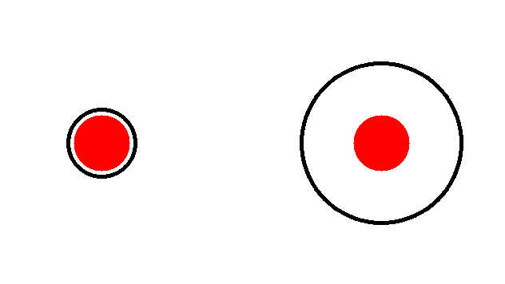

sorceress 1.2


Install with pip
pip install sorceress==1.2
#importing
import sorceress
**sorceress **is a python package for creating optical illusions in an easy way.üëÄÔ∏è
Functions:
- chromatic()
2- dotill()
3- realtimegrid()
4- addlines()
5- addlinesAlpha()
6- eyecolour()
7-dakinPex()
8-bruno()
9-dolboeuf()
10-kanizsa()
11-ponzol()
1- sorceress.sorcerer.chromatic
Chromatic adaptation probably one of the central concept in color vision. Spatially or temporally related surrounds can have profound effects on the color appearance of illuminated objects.
According to APA, chromatic adaptation is decreased sensitivity to a particular color as a result of prolonged exposure to a colored stimulus.
With this code,you could generate your own illusion either with Von Kries or CMCCAT2000.
sorceress.sorcerer.chromatic("yourimage.jpg","outputname",circle=True,method="CMCCAT2000",gif=False,duration=10000)
"yourimage.jpg" = Source image.
"outputname" = Your output name (You don't need to add extention (jpg,png etc.)
circle=True = Adds a red dot in the middle of pic.
if gif= True , it will create a gif with output images (recomended)
method you may either use Von Kries chromatic adaptation or Fairchild (1990)
simple example:
focus on the red dot (10 second)

2- sorceress.sorcerer.dotill()

Lateral inhibition is the phenomenon in which a neuron's response to a stimulus is inhibited by the excitation of a neighboring neuron (Bakshi and Ghosh, 2017).Neurons that are firing inhibit the stimulation of surrounding. Accordingly, only the neurons that are most stimulated and least inhibited respond (Cohen, 2011).
It's an old-fashioned illusion that is probably known the most.
dotill(hsize,wsize,hlinefreq=12,wlinefreq=12,dotcolor=(0,255,0),dotradius=5,horizontalcolor=(14, 75, 3),verticalcolor=(14, 75, 3),horizontalthickness=4,verticalthickness=4,verticallines=True,horizontallines=True):
hsize and wsize are dimensions of the image. Hlinefreq is the frequency of vertical lines and the wlinefreq is for the horizontal lines. dotcolor is the color of the dots. dotradius is the radius of the circles. horizontalcolor and verticalcolor points the colors of the lines. You may remove those lines with verticallines=False,horizontallines=False
example usage:
sorceress.sorcerer.dotill(500,500)
3- sorceress.sorcerer.realtimegrid()
sorceress.sorcerer.realtimegrid(realcolours=True)
perceive black and white real time (with webcam) frames as colorful.
with realcolours=False code will not calculate the real colors of your frame. I recommend you to use this function with real colors. Illusion is getting powerful if colors of lines separate each other, however, with realcolours=False means a lot of options are needed in the slide bar and it's not a pleasant view. It is an indicator of how flexible the color perception in the human visual system is. Inspiration:
4- sorceress.sorcerer.addlines
inspired from Akiyoshi Kitaoka.
Have you seen this illusion before? In bellow, someone is hiding after those grids. Beneath this grids there is more than Grids. Beneath this grids there is an idea. And ideas are bulletproof...

sorceress.sorcerer.addlines(img,outputname,linecolour1=(0,255,0),linecolour2=(0,255,255),linecolour3=(255,0,0))
Add vertical lines to an image
img your input image like "morgo.jpg"
outputname desired output like desired
linecolour1 linecolour2 and linecolour3 are point the colors of lines.
example usage:
sorceress.sorcerer.addlines("vfor.jpg","mygrids",linecolour1=(150,5,5),linecolour2=(10,155,20),linecolour3=(0,15,15))
5- sorceress.sorcerer.addlinesAlpha
Same with "addlines" but this time; line colors are much more stable against the luminance change in the background image. It's because in opencv, when you overlay two images or colors the function called addWeighted mixes the colors in very "small tones" but you probably do not even notice. Still, this function which I called alpha blending, is much more stable to luminance change. Use both, in the same way and see what is differs.
addlinesAlpha(self,img,outputname,linecolour1=(0,255,0),linecolour2=(0,255,255),linecolour3=(255,0,0)
6- sorceress.sorcerer.eyecolour
sorceress.sorcerer.eyecolour("yourimage.jpg")
With this illusion, you perceive the black and white NumPy array as colorful. After you run this code, you need to select the iris manually then push the enter. I didn't want to use the iris detector since it slowing down the script. Just select smaller as much as possible. I've used seamlessClone function from the OpenCV for getting much more realistic results. Your ROI (region of interest that you selected manually) will correspond an eclipse' coordinates which I needed to detect the exact position of the iris.
example: You probably have seen this lady's left eye as blue, but it's exactly the same color as the right eye.

7- sorceress.sorcerer.dakinPexc
sorceress.sorcerer.dakinPex(outputname="myoutput",dimension=800)

If you see the different tones of gray this illusion is successful. If you perceiving all same, try with the big dimensions.
I've written this illusion after the read a paper from (Dakin and Bex, 2003).The existence of spatial frequency channels in the visual system is implicated in lightness perception. And I also should note that It has long been known that the brightness of a region of visual space is not related only to that region’s luminance, but depends also upon the luminances of adjacent regions (Von Bekesy, 1968).
8- sorceress.sorcerer.bruno
bruno(outputname,circle=False,polycolor=(0, 255, 255), rectcolor=(255, 255, 0), circColor=(0, 0, 255))
sorceress.sorcerer.bruno("myimagee",polycolor=(0,0,255),rectcolor=(34,34,128))

Well in the first time it seems a little bit confusing but in their experiments, Bruno et al. (1997) have shown their participants first the shapes that you've seen on the left then shapes on the right have shown. In this experiment, participants needed to decide quickly as much as possible whether is it the same or not with the previous shape that they had shown. Results have shown that, participants were fast and found it easy to say that the two shapes were the same in the top situation. But they were very slow in the other scenario (It's still same!).
9- sorceress.sorcerer.dolboeuf
dolboeuf(outputname,circleColor=(0,0,255),kill=False)
sorceress.sorcerer.dolboeuf("doloeufout",kill=False)

Which red circle is bigger than the other? Probably you know what I'm talking about, two of them in the same radius. This illusion was first created by Belgian psychologist Joseph Remi Leopold Delbœuf in 1865. It's all about the perception of size. Of course, it's not the "all" about the story, the size differences of the inner and outer circle also playing their roles in this illusion... Well, I didn't create a parameter for customizing those circle's (inner and outer) radius but I believe you get the point. If you select the kill=True, the illusion will be destroyed by the two horizontal lines.
10- sorceress.sorcerer.kanizsa
kanizsa(outputname,dims,circleColor=(0,0,255))
sorceress.sorcerer.kanizsa("12outkaniza",400,circleColor=(34,34,178))

The Kanizsa illusion is probably one of the most known it was created by an Italian psychologist Gaetano Kanizsa (1913–1993). We can see surfaces, in this example squares (even though there are different kinds of Kanizas), with contours that are not present in the image. It is called illusory contours you can call this illusion also the "subjective contours" (Kanizsa, 1976). The first time I heard the name "Kanizsa" I thought he is Japanese for a long time. Then I learned that Kaniza was actually an Italian! It's because his name is used in many psychology textbooks to describe the Kanizsa triangle and most of those books don't give the full name of Kanizsa.
11- sorceress.sorcerer.ponzol
ponzol(outputname,kill=False,line1=(255,0,0),line2=(255,0,0),rectangle1=(0,0,255),rectangle2=(0,0,255))
sorceress.sorcerer.ponzol("test",kill=False,line1=(0,0,139),line2=(0,0,139),rectangle1=(0,69,255),rectangle2=(0,80,255))

The Ponzo illusion is old (Ponzo, 1912). But Ponzo actually published his illusion with a scientific paper. Actually, any image with a strong sense of perspective has this. You could see various methods if you search a little bit (especially in railways).
REFERANCES
Bakshi, A., & Ghosh, K. (2017). A Neural Model of Attention and Feedback for Computing Perceived Brightness in Vision. Handbook of Neural Computation, 487–513. doi:10.1016/b978-0-12-811318-9.00026-0
Bruno N, Bertamini M, Domini F (1997) Amodal completion of partly occluded surfaces: Is there a mosaic stage. J Exp Psychol Hum Percept Perform 23:1412–1426
Cohen R.A. (2011) Lateral Inhibition. In: Kreutzer J.S., DeLuca J., Caplan B. (eds) Encyclopedia of Clinical Neuropsychology. Springer, New York, NY. https://doi.org/10.1007/978-0-387-79948-3_1379
Dakin S. C. and Bex P. J. 2003 Natural image statistics mediate brightness ‘filling in’**Proc. R. Soc. Lond. B.2702341–2348 http://doi.org/10.1098/rspb.2003.2528
Kanizsa G (1976) Subjective contours. Sci Am 234:48–52
Ponzo, M. (1911). "Intorno ad alcune illusioni nel campo delle sensazioni tattili sull'illusione di Aristotele e fenomeni analoghi".
Von Bekesy G. (1968) Mach- and Hering-type inhibition invision. Vision Res. 8, 1483-1499.